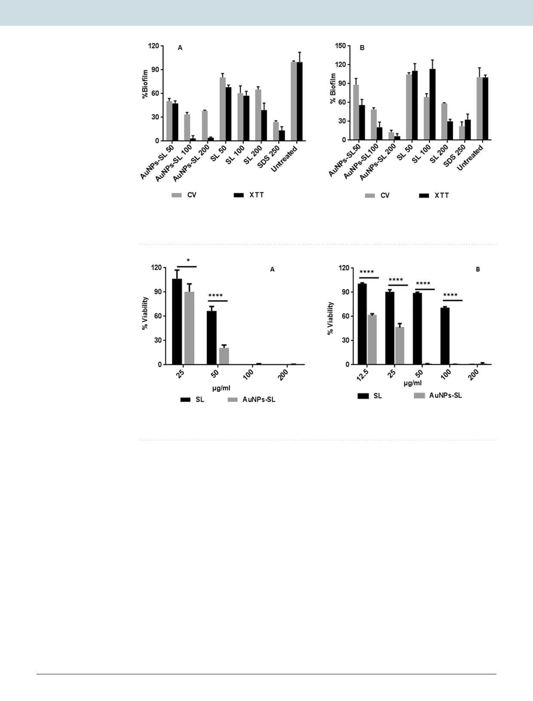

www.nature.com/scientificreports/
www.nature.com/scientificreports
Figure 4. AuNPs-SL activity on preformed biofilm against S. aureus (A) and V. cholerae (B) by CV (grey
colour) and XTT assay(black colour). Experiment was performed in triplicate and graph was plotted using
GraphPad Prism 6.0 using average value with SD.
Figure 5. Antimicrobial activity on non-dividing cells of S. aureus (A) and V. cholerae (B) by XTT assay. Data
was analyzed using Two-way ANOVA. *P value < 0.01.
treatment with the nanoparticles, the cells become irregular in shape and size observed in SEM and TEM images.
Moreover, the figure also indicated the initiation of cell lysis and disruption of the cell membranes thus suggesting
that the attachment of AuNPs-SL on the bacterial membrane might have resulted in cell rupturing. Internalization
of nanoparticles to the cells was also observed in TEM micrograph for both pathogens (Fig. 6F,H)
Effect of AuNPs-SL on respiratory chain LDH activity in bacterial cells. Upon internalization of sophorolipid
capped gold nanoparticles to the microbial cell can interfere with different components present inside the cells.
One of the major components to which it can bind and interfere, is enzyme. The crucial enzyme system required
for survival is electron transport system (ATP synthesis). Here, AuNPs-SL induced interference in cell respira-
tion was measured through LDH activity (Fig. 7). In viable cells, the LDH activity was determined by measuring
the reduction of NAD+ to NADH and H+ during the oxidation of lactate to pyruvate. In the second step of
the reaction, diaphorase uses NADH and H+ to catalyze the reduction of a tetrazolium salt to a highly colored
product, formazan. It was found that most of the cellular inhibition occurred at 2 hours of incubation at higher
concentration i.e., 60 μg/ml; whereas lower concentration has partial inhibition of cellular activity. This result
also suggested that the inhibition of respiratory enzymes in concentration and time dependent manner. Thus, it
is clearly demonstrated that the activities of respiratory chain dehydrogenases in both S. aureus (Fig. 7A) and V.
cholerae (Fig. 7B) were inhibited by AuNPs-SL, similar to the mechanism of action proposed by several groups38.
Evaluation of synergistic effects between AuNPs-SL and antibiotics by broth microdilution
checkerboard method. Checkerboard microdilution method was used to evaluate the synergistic effects
of AuNPs-SL with three conventional antibiotics having different mechanism of action against these bacteria
and the effects were evaluated by determining the FICI. The results of the synergistic effect are presented in
Tables 2 and 3. An enhanced antibacterial synergistic activity of AuNPs-SL and two antibiotics (Kanamycin and
Scientific Reports | (2020) 10:1463 | https://doi.org/10.1038/s41598-019-57399-3
6